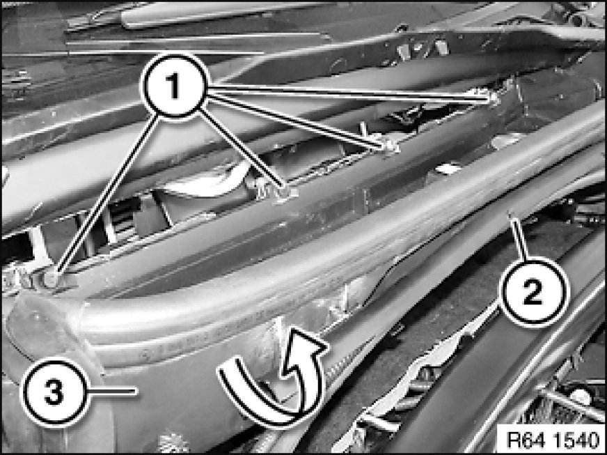
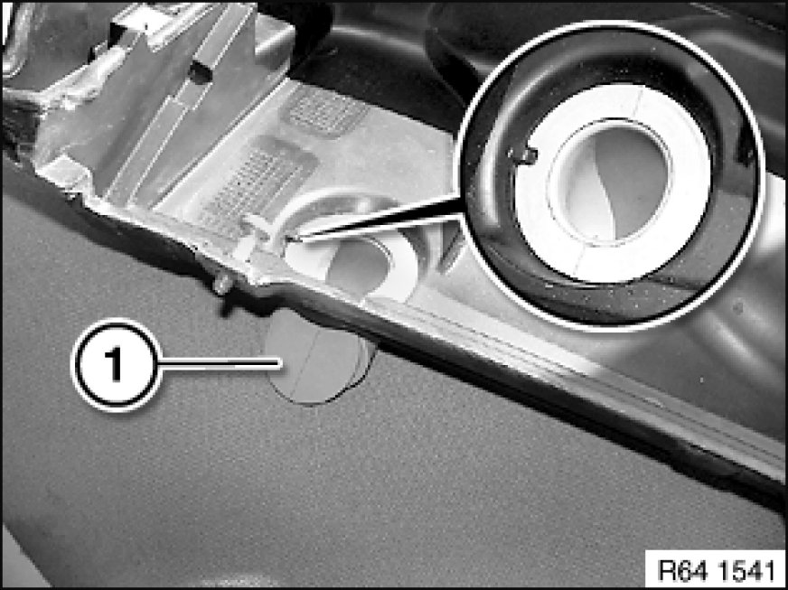

Removing and Installing/Replacing Microfilter Housing
64 31 080 - Removing and installing/replacing microfilter housing

Necessary preliminary tasks:
- Remove microfilter Replacing Microfilter for Interior Ventilation
- Remove cable duct cover

Release screws (1).
Remove lines from cable duct (2).
Feed microfilter housing (3) upwards in direction of arrow.

Installation:
Make sure water drain hoses (1) are correctly seated.